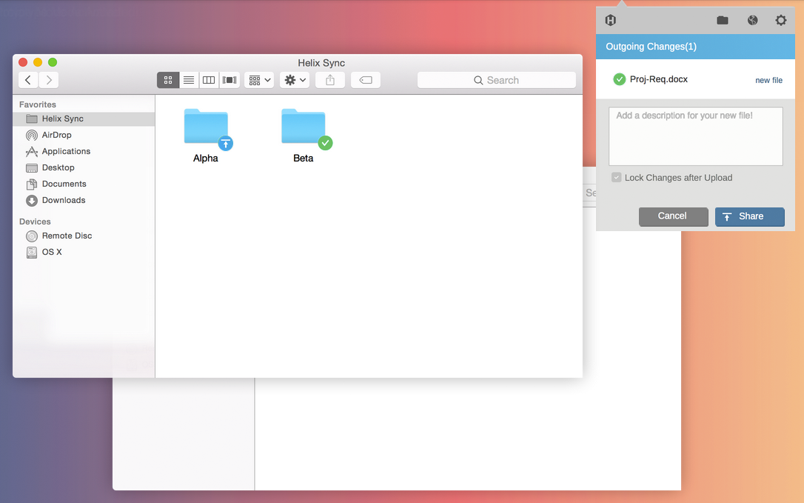

Helix Sync×Perforce
Helix Sync
In my position at Perforce as a UX Designer my employment was structured in such a way that design & research were conducted in 1-month product rotations.
My first project rotation involved working on an early stage product called Helix Sync. My first task was to create a concept prototype for the product to illicit early feedback from our users. Using task analysis with the prototype and user interviews we were able to get some early insight on the direction of our product.
my role
My main role on this project involved creating the visual designs and prototype. In the user research phase I worked closely with another designer to help schedule and fascilitate most of the sessions. I also led group synthesis sessions at the end of the project.
a brief history
Perforce has been a leader in the version control industry since they premiered their centralized versioning engine in 1995.
Since the arrival of DVCS versioning tools, most notably Git and Github, Perforce has struggled to stay relevant to their users. Recently they have found their niche by appealing to the game development community.
our target users
We saw an opportunity within the game development industry to create a product for "Technical-minded" Game Designers/Artists.
Research from a prior user testing with these Designers revealed that they currently don't have a way to:- Collaborate easily and effectively with game developers.
- Version their assets in a way that fits their mental model and integrates with their current tools.

the concept

The intial concept for Helix Sync was for it to be a Desktop "Sync and Share" Solution. Much of the feedback we we're looking for from our users in this first round of research was about what mode of the product worked best for them.
Helix Sync has this idea of Manual Upload vs. Auto Upload. Auto upload would follow a similar sharing paradigm to Dropbox, Google Drive, Box, etc. while Manual would allow them explicit control over when files are synced.
test setup
- Pre Task Analysis Quantitative Interview. Collect hard numbers and demographics.
- Task Analysis with Prototype. An identical task with both Manual/Auto modes.
- Post Task Analysis Qualatative Interview. How did “X” make you feel?
- Learn about our target users' workflows. Understand their mental models surrounding file handling/sharing
- Get the test subject to understand the product. This included understanding both the Manual/Auto modes of the product.
- See which mode of the product aligns with their real life workflows.
We had a total of 10 total test participants. 4 of them were internal Perforce customers. 6 of them were external participants.
OUR SYNTHESIS
To help evangelize design throughout Perforce myself and another designer fascilitated group synthesis sessions where we invited engineers & stakeholders to participate in "hands-on" synthesis.
In these sessions we conducted a Affinity Mapping of key insights/quotes from the test. Myself and another designer worked on turning those groupings into "User Needs..." statements.
By creating sets of these "User needs..." statements we were able to create actionable design recommendations from them. We decided to call these "Design Principles" as opposed to "Design Recommendations" because this product had yet to be grounded in user research–we chose to create a solid design foundation for further research to build on.